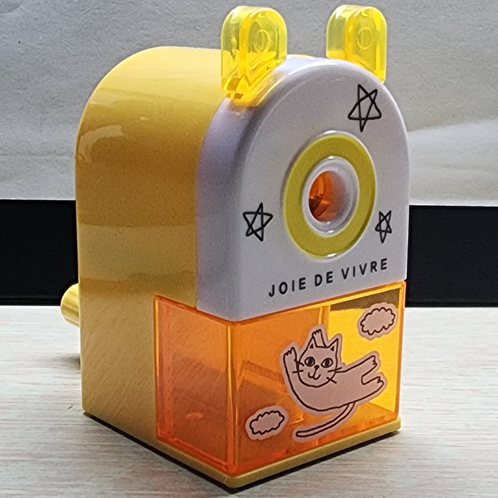

방향제
집에서 쓰는 방향제 병이다. 이 방향제 병에 적힌 라벤더 앤 화이트 머스크라는 문구의 글씨체가 향기의 분위기와 어울렸다. 또, 병 속에 들어있는 작은 자갈들과 흰 꽃의 대비 감이 잘 느껴져서 마음에 들었다. 병의 뚜껑 또한 깔끔한 금속 재질을 사용하여 보기 좋았다.
실내화
기숙사에서 쓰는 실내화다. 신발에 달린 강아지의 얼굴이 하얀색과 검은색이 대비되어 검은콩 같은 눈동자가 눈에 띄었으며, 뺨에는 작은 분홍색 홍조가 그려져 있어서 귀여움이 더 강조되어 좋았다. 또, 신발 몸통 부분은 초록색으로 만들어져서 마치 강아지가 풀밭에 누워있는 듯한 느낌이 들어 마음에 들었다.
연필깎이
노란색 연필깎이다. 이 연필깎이는 노란색을 주로 사용하여 귀여운 느낌을 주었다. 앞면에는 별 그림 3개와 구름 위를 나는 고양이 그림을 그려 넣어서 연필깎이가 밋밋해 보이지 않게 해주었다. 또, 삶의 환희라는 뜻의 영어 문구를 써넣어서 포인트를 주었다. 연필깎이의 아랫부분을 투명하게 만든 것도 몸통 부분과 대비되어 좋았다.
낮에 본 길거리
구경 중 둘러본 거리다. 사진 속에 보이는 꽃 조형물들이 공중에 매달려있는 모습이 이 거리의 분위기를 밝고 활기차게 만들어 줘서 좋았다. 조형물 꽃들도 여러 가지 색상을 사용하여 많은 개수의 꽃들을 매달아 놓아서 더욱 눈에 띄었고, 이곳의 여러 가게들의 조명 불빛들과 어우러져 눈길을 끌었다.
자동차
세차를 마친 자동차다. 이 자동차를 봤을 때, 광이 나는 검은색 도색이 깔끔해서 마음에 들었고, 그 위에 붙여 놓은 두 줄의 흰색 스티커가 이 자동차의 포인트가 되었다. 또, 차 앞부분에 부착된 출시 50주년 마크가 밋밋한 부분을 채워주어 보기 좋았으며, 동그란 라이트나 사이드미러가 귀여웠다.
책
룬의아이들이라는 책이다. 이 책은 표지가 깔끔한 남색이 깔려있고, 금색 테두리가 잡혀있어서 고급스러운 느낌이 들어서 눈길이 갔다. 표지에 밝은색과 어두운색이 대비되어 한눈에 정보가 들어와 좋았고, 중간에 있는 검을 감싼 뱀 그림이 주제를 짐작할 수 있게 해주어 상상하는 재미가 있었다.
밤에 본 길거리
밤에 길을 걷다 찍은 사진이다. 이 장소의 보랏빛 조명과 천막 천장에 그려져 있는 그림들이 잘 어우러져 보기 좋았다. 또, 알록달록한 구형의 조명들이 천장에 매달려있는 모습이 마치 별이 떠 있는 듯한 인상을 주었다. 이 외에도 이 장소에 있는 여러 벽화도 보기 좋았다.
플라밍고
길을 걷다가 발견한 플라밍고 조형물이다. 이 플라밍고 조형물의 질감이 풍부해 보여서 보기 좋았고, 뒤쪽 벽에 있는 the goldrn이라는 문구가 깔끔하고 고급스러워 보여서 마음에 들었다. 또, 앞에 있는 상자들과 상자에 적힌 문구들이 이 조형물의 분위기와 잘 어울려서 좋았다.
하트다리
하트 모양 교량이다. 교량의 정중앙에 위치한 하트모양 주탑의 곡선과 뾰족한 부분이 잘 어울린다. 교량의 바닥재로 사용된 나무 또한 질감과 색감이 하트 주탑이 주는 느낌과 잘 어울려 좋았다. 또, 다리의 난간은 깔끔한 흰색의 촘촘한 난간을 사용하여 안전해 보인다.
도자기들
여러 도자기 작품을 필터 씌워 찍은 사진이다. 도자기 하나하나를 따로 봤을 때도 문양이 화려하고 정교해서 예쁘지만, 도자기들을 모아 놓고, 다 같이 봤을 때 옹기종기 모여있는 모습이 아기자기해서 좋았다. 그중에서도, 사진 구석에 있는 빨간 꽃이 그려져 있는 도자기 주전자가 깔끔하고 귀여워서 특히 눈길을 끌었다.